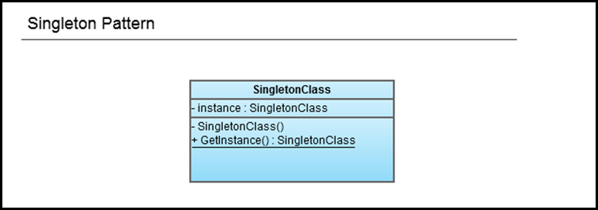

Singleton Pattern
Posted: August 01, 2011 | More posts about Design Patterns OOP programming
Pattern Name
Singleton Pattern
Classification
Creational Pattern
Intent
Ensure a class only has one instance, and offer a global point of access to that instance.
Motivation
In many situations you’d find yourself in need of ensuring that a certain class can only be instantiated once and is accessible in various parts of a system.
Example for such situations is:
- Database access
- Logging
- Communication
- Printer spooling
- File systems
The singleton pattern provides us with two properties:
- It ensures a class is only instantiated once.
- It provides a global access point to that class.
Note Singletons are meant to be used sparingly, so if you find yourself using them everywhere you might want to take another look at your design.
Applicability
Use The Singleton pattern when you want your classes to provide you with only one instance that is globally accessible to the code from an access point.
Structure

Participants
SingletonClass: This class provide global access to only a single instance of it by doing the following:
- It hides its constructor to prevent any external classes from creating new instances.
- It declares the static method GetInstance() that provides access to the single instance that is held in the private variable: instance.
Consequences
Like any pattern, the singleton pattern has its tradeoffs (according to its implementation) and if it is used while being unaware of these tradeoffs can produce unwanted results.
Criticisms
First criticism: Using it is considered a breach to one of the OOD Principles: The Single Responsibility Principle, which states that:
Every object should have a single responsibility, and that this responsibility should be entirely encapsulated by the class.
Thus, the class shouldn’t care less for being a Singleton or not, as it’s only concern should be doing its business responsibility. But when using Singleton, the class is responsible for two things here:
- Its original business responsibility.
- Managing the instantiation of its objects.
Second criticism: We all know that having global variables in our code, produces code smells. But, isn’t this what the Singleton Pattern does? It makes an instance of the class accessible globally. There disadvantages of using global variables that apply when we use Singletons without proper care because of the similarity in their nature.
Some of these disadvantages are:
- Implicit coupling - Many programmers unconsciously would tightly couple the class that uses the Singleton Pattern with the rest of their code, because it’s globally accessible. When this is done, the overuse of this pattern could converge into becoming an anti-pattern.
- Namespace pollution - Namespace pollution can occur when we abuse Singleton Pattern, though it is a bit unlikely if the pattern is used wisely.
- Multithreading issues can occur when more than one thread the GetInstance() method is invoked for the first time. This will result in instantiating many instance at the same time. That’s why it is important to make sure that our code is thread safe by using Synchronization (sometimes discouraged because of its performance footprint), Lazy Instantiation using double-checked locking, or Early Instantiation. Choosing the implementation to use depends mainly on your needs and the available resources.
- Unit-testing programs that contain singleton objects can become annoying because the Singleton objects have a persistent state throughout the program. Leading to the following:
- It makes it hard to replicate the tests for later testing or even having a clean environment for testing.
- It takes away one thing that makes unit testing effective which is having tests that are independent on each other.
- Also many developers prefer making dependencies between classes obvious through method signatures, rather than having the Singleton object hidden in the code, lurking for the right moment to come and bite you in the back. Some might argue that passing that object through all this methods induces tight coupling, but on the contrary this way of exchanging objects allows you to write to an interface that can be easily extended without having to change a single line in your old code. Thus you’re coupling to an interface not to an implementation.
If we want to overcome the mentioned shortcomings, we could separate the singleton part from the actual object, allowing for the object itself to be used normally if needed. Perhaps we can use a Factory or a builder that would encapsulate the object creation and maintain having only one instance created of this class, while leaving the class responsible only for its business responsibility.
J. B. Rainsberger argued in his article “Use your Singletons wisely” that classes should not be responsible for the singleton part of the code:
Suppose an application needs only one instance of a class and the application configures that class at startup: Why should the class itself be responsible for being a singleton? It seems quite logical for the application to take on this responsibility, since the application requires this kind of behavior. The application, not the component, should be the singleton. The application then makes an instance of the component available for any application-specific code to use. When an application uses several such components, it can aggregate them into what we have called a toolbox.
Implementation
Naïve implementation
public class Singleton { private static Singleton _instance; private Singleton() { } public Singleton GetInstance() { if (_instance == null) _instance = new Singleton(); return _instance; } }
Disadvantages of this implementation:
It is not thread safe as in some situations, separate threads can invoke the GetInstance for the first time simultaneously. So when both of them reaches the statement if (_instance == null) it will be evaluated as true, thus both threads will see that it is valid to instantiate a new object. To avoid this issue, we have to write thread-safe code .
Thread-safe Singleton using a simple Lazy Instantiation
public sealed class Singleton { private static readonly Singleton instance = new Singleton(); private Singleton() { } public static Singleton Instance { get { return instance; } } }
Having the Singleton instance referenced by a private static member variable, gives us an advantage: the actual instantiation of the Singleton object doesn’t occur until the class is referenced by a call to the Instance property. Thus, this solution provides us with a form of Lazy Instantiation.
Thread-safe Singleton using Double-Checked Locking
using System; public sealed class Singleton { private static volatile Singleton _instance; private static readonly object Lock = new Object(); private Singleton() { } public static Singleton Instance { get { if (_instance == null) { lock (Lock) { if (_instance == null) _instance = new Singleton(); } } return _instance; } } }
This specific implementation of Double-Checked locking can be factored into:
When working in a multi-threaded environment, we risk running into issues that arise from resource-sharing between multiple threads, like deadlocks and race conditions (What is a race condition?). This implementation of the Singleton Pattern however saves us from all this drama.
- Using volatile keyword.
- Using the lock statement to accomplish thread synchronization.
- Using double-checked locking.
The use of the volatile keyword on the instance member variable allows us to avoid the unexpected and unpredictable results in multi-threaded programs that access fields without synchronization and using the lock statement to synchronize access. The volatile keyword indicates that a certain field can be modified by multiple threads, avoiding the compiler optimizations that assume access by a single thread. This ensures that the most up-to-date value is present in the field at all times.
For more details on the volatile keyword and volatile fields check the following references: volatile (C# Reference) [MSDN Library] Volatile fields [MSDN Library]
Having data shared between threads is the best recipe for obscure errors and complexity when working in a multithreaded environment. A way of solving this problem is using locks in order to stop more than one thread from working on the same data at the same time.
The lock keyword marks a statement block as a critical section by obtaining the mutual-exclusion lock for a given object, executing a statement, and then releasing the lock (source: lock Statement [MSDN Library]). The idea is to ensure that a thread can’t enter a critical area in the code, when another thread is still executing it. If two threads encounter a lock, one thread waits(blocks) until the lock becomes available.
So, in layman’s terms we can say that the mutual-exclusion lock acts as a simple door lock. You enter a room, you lock the door behind you and when you finish your business, you unlock the door and come out of the room, only then can somebody else enter. If anybody tries to enter the room while you are still in there, he has to wait.
Important Notes
- It’s a matter of good practice to avoid locking on a public type or an object that is accessible to other classes, because this risks running into performance issues and even deadlocks. Instead, we should use values of objects that are specifically made for the sole purpose of locking. These objects are commonly declared as private or private static.
- It’s also worth knowing that when using mutual-exclusion locks, the blocked thread doesn’t consume any CPU resources unlike other locks like the Spinlock, nevertheless each has its advantages and usages.
You might ask yourself why can’t I just simply use the lock this way:
get { lock (Lock) { if (_instance == null) _instance = new Singleton(); } return _instance; }
instead of the implemented one:
get { if (_instance == null) { lock (Lock) { if (_instance == null) _instance = new Singleton(); } } return _instance; }
The problem with the first implementation is that it hinders the performance of the application because of the constant locking every time an instance is requested. Unlike the double-checked locking implementation, which makes sure that a lock is actually necessary and that there is no available instance.
Related Patterns
Abstract Factory , Builder , and Prototype.
References
- Design Patterns: Elements of Reusable Object-Oriented Software – The Gang of Four (GoF): Erich Gamma, Richard Helm, Ralph Johnson, John M. Vlissides.
- Head First Design Patterns – Eric T Freeman, Elisabeth Robson, Bert Bates, Kathy Sierra.
- Why Singletons are Evil - Scott Densmore
- Implementing the Singleton Pattern in C# - C# in Depth